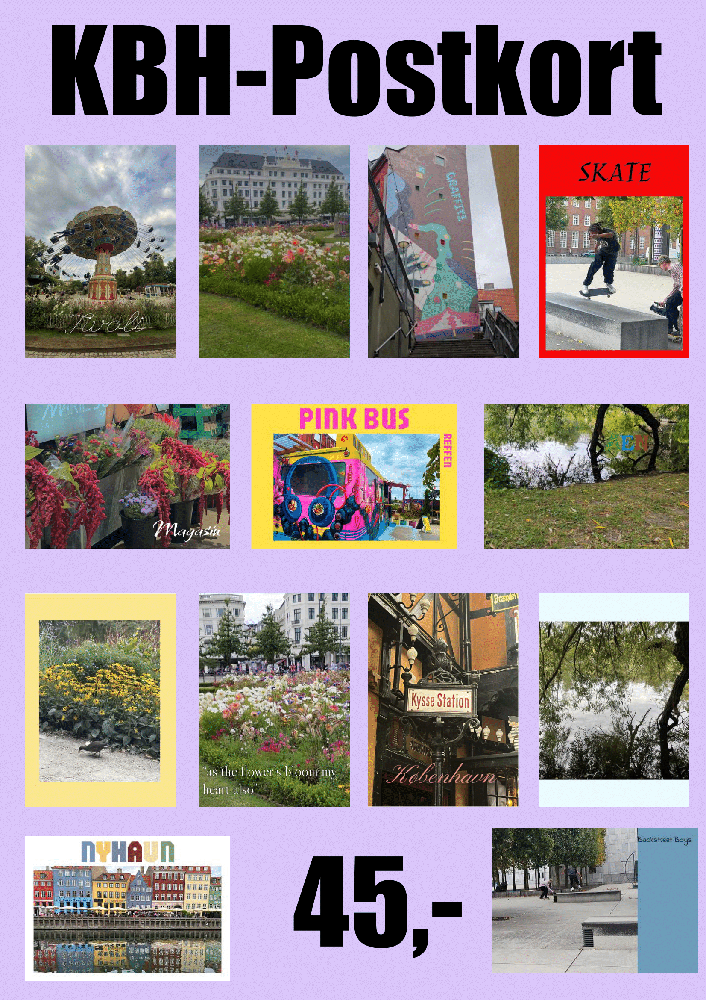

Flow 1.1 – KBH Postkort
I dette projekt arbejdede jeg med fotografi, typografi og komposition. Jeg tog billeder rundt omkring i København og kombinerede dem med tekst og farver for at skabe en serie postkort og en samlet salgsplakat.
Proces
Jeg eksperimenterede med forskellige motiver som park, blomster, skate, graffiti og bevægelse. Derefter arbejdede jeg med typografi oven på billederne for at skabe forskellige stemninger.

Endeligt resultat
Her er min færdige plakat, hvor alle postkortmotiverne er samlet som et salgsprodukt.

Hvad jeg lærte
Jeg blev mere sikker på billedkomposition, farvevalg og brug af typografi til at understøtte en visuel fortælling.
Flow 1.2 – Website prototype: K.O.R.A
I dette projekt udviklede vi konceptet K.O.R.A – en mobilplatform der samler sociale trænings-events og belønninger ét sted. Idéen er at gøre det nemmere at finde og deltage i aktiviteter som løb, træning i parker og andre fællesskabsbaserede events.
Koncept
K.O.R.A står for Kontinuitet, Overskuelighed, Respons og Aktivitet. Platformen skal motivere brugeren til bevægelse gennem events, point-system og vouchers som belønning.
Proces
Vi startede med papirskitser af forsiden, “Min side” og eventsider for at få styr på brugerflowet. Derefter byggede vi en mobilprototype i Figma med et 4:12 grid, fælles komponenter og en fast bundnavigation. Fokus var på struktur og navigation før vi tilføjede farver og billeder.
Designvalg
Vi valgte billeder med fællesskab og aktivitet samt en farvepalette med grøn (energi og fællesskab) og lyserød (varme og nærvær). Typografien Inria Serif giver et venligt og læsevenligt udtryk. Knapper og inputfelter er designet med tydelig affordance og feedback, så brugeren kan se hvor der kan interageres.
Resultat
Prototypen viser et sammenhængende flow mellem forside, kalender, map, events, rewards og “Min side”. Vi har arbejdet med konsistens, gestalprincipper og usability heuristics for at gøre oplevelsen intuitiv og overskuelig.
Se Figma-prototypen her: K.O.R.A i Figma
Hvad jeg lærte
Jeg lærte at arbejde mere struktureret med wireframes, grid, komponenter og mobil-first design, samt hvordan man bruger prototyper til at teste brugerflow, selvom der ikke er rigtig backend-funktionalitet.